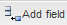
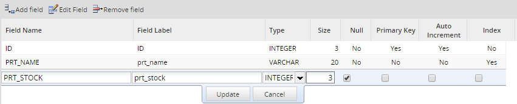
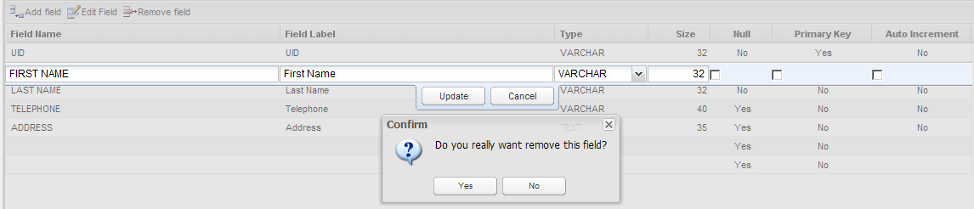
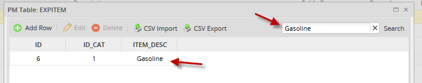
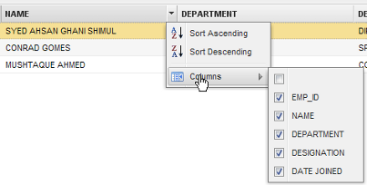
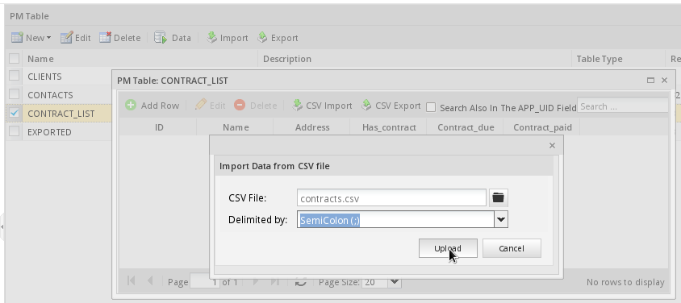

- Overview
- Creating PM Tables
- List of PM Tables
- Editing PM Table Data
- Deleting PM Table Data
- Viewing and Editing PM Table Data
- Header Properties from the Table List
- Importing CSV Files into PM Tables
- Exporting PM Table Data as a CSV File
- Exporting PM Tables
- Importing PM Tables
- Reserved Words in PM Tables
- Accessing PM Tables from Triggers
- Accessing PM Tables in Dynaforms
Overview
PM tables are designed for users who do not wish to go through the hassle of maintaining an external database. Even users who have external databases may find PM tables handy for managing data that will be used in Dynaforms or Output Documents. The data in PM tables is stored in the MySQL database wf_<workspace> (which by default is named wf_workflow), so the data can also be accessed by an external program.
Creating PM Tables
To create a PM table, go to Admin > Settings > PM Tables
Note: From version 3.0.1.8 on, users must have the PM_SETUP_PM_TABLES permission assigned to their role to access the Admin > Settings > PM Tables option. This permission is not needed to use the executeQuery() function in a trigger to access PM Tables, but access can be restricted by editing the execute-query-blacklist.ini file.

Click on New and two options will display, choose New PM Table.

Enter all the information about the new PM table into the fields:
- Table Name: Enter the name of the new table, which will be converted into uppercase.
PM tables are created with the prefix PMT_, so they won't be confused with other tables in the wf_<workspace> database.

For example:
If a PM table named "COUNTRY" is created, the actual name of the newly created table will be: "PMT_COUNTRY", as shown in the image below:

Note: When querying a PM table with SQL, remember to include the "PMT_" prefix in the table name.
- Description: A description or any additional information about the table.
Adding Fields
To add fields to the PM table, click on the  icon. Enter the following information about the new field:

Fields:
- Field Name: A unique case-insensitive name to identify the field. Names can only contain letters, numbers and
_(underscores) and can be up to 64 characters long. They cannot begin with a number. Spaces, symbols and non-ASCII letters such as Ä and Ñ are not permitted. ProcessMaker will also check that the field names are not one of the reserved words in MySQL and PHP. - Field Label: The displayed label for the field, which the user will see when editing data in the table.
- Type: Fields can be one following data types:
- BIGINT is an integer of 8 Bytes storage capacity that can have a value between -9223372036854775808 and 9223372036854775807.
- BOOLEAN is a field where
0is considered false and a non-zero value is considered true. Note: In reality, this is an integer, so it can accept any value between -2147483648 and 2147483647. - CHAR is field with a string of 255 or fewer characters. It is like a VARCHAR, but it stores the full number of characters in the database. Note: There is no performance advantage in MySQL databases to using CHAR instead of VARCHAR, so it is recommended to use VARCHAR since it occupies less space in the database.
- DATE is a date that is stored in the format
YYYY-MM-DD, such as2010-07-25. - DATETIME is the date and its time, which is stored in the format
YYYY-MM-DD HH:MM:SS, such as1999-12-31 08:52:04, whereYYYYis the year,MMis the month between 01 and 12 andDDis the day between 01 and 31,HHis the hour between 00 and 23,MMare the minutes between 00 and 59 andSSare the seconds between 00 and 59.
- DECIMAL is a floating-point number that allows the size to be set. If no size is specified, it will be 10 digits long with no decimal digits by default. If the size is specified, then it sets the maximum number of digits before the decimal point, and the precision is two decimal digits. It is recommended to use this data type for money, since it has exactly two decimal digits.
- DOUBLE is a 8 byte floating-point number between -1.7976931348623157E+308 and 1.7976931348623157E+308.
- FLOAT is a 4 byte floating point number between -3.402823466E+38 and 3.402823466E+38.
- INTEGER is an 4 byte integer between -2147483648 and 2147483647.
- LONGVARCHAR is a string of characters up to 16,777,215 bytes long.
- TEXT is a string of characters less than 65,536 bytes long.
- REAL is a synonym for DOUBLE.
- SMALLINT is a 2 byte integer between -32768 and 32767.
- TIME is the time in
HH:MM:SSformat, whereHH(hour) is between 00 and 23,MM(minutes) is between 00 and 59 andSS(seconds) is between 00 and 59. - TIMESTAMP is the same as DATETIME. Take into consideration that when storing a value in a TIMESTAMP field, the value will be automatically converted to the DATETIME type, because of restrictions in the ProcessMaker ORM.
- TINYINT is a 1 byte integer between -128 and 127.
- VARCHAR is a string up to 999 bytes long. It only uses as much space in the database as is needed.
See the MySQL manual for more information on these data types.
To view indexes created in PM table fields, access ProcessMaker's database and check the indexes of pmt_namePMTable:

Note: Only one index can be created per PM table, but this index can comprise multiple fields.
After defining each field click on Update, and when all the fields are added, click on Create to store the structure of the table.
Editing Fields
To edit a field, select the field to edit and click on  or just double click on it:
or just double click on it:

Removing Fields
To remove a field, select it and click on  :
:

List of PM Tables
After creating a PM table, it will be displayed in the list of available tables under Admin > Settings > PM Tables.

Editing PM Table Data
Choose one table and click on Edit to alter its field structure, or change the table's description. All properties can be edited except the name of the table, which can only be edited using a DBMS (Data Base Management System).

Fields can be added, edited and removed. Take into account that if the structure of the table is edited all data will be lost.

Deleting PM Table Data
One or more tables can be deleted at the same time by selecting (checking), then and clicking on Delete:

Viewing and Editing PM Table Data
To view the data stored in a PM table, select the table to view and edit, then click on Data:

To add a new row to a PM table, click on the Add Row link at the top of the table. Click on the Edit and Delete links to edit or delete a record in the PM table. Fields can also be edited or deleted by clicking over the field:

Searching Data Inside a PM Table
In previous versions of ProcessMaker, if you needed to search some information inside a data table, you had to search manually. This was tiresome work, especially if you needed to search information inside of a table with plenty of data.
Now you can search for specific values when displaying PM tables through the search box added inside of the Data window. You can search any kind of text but it is not possible to use search criteria like <, >, between, like, etc
Go to Admin > Settings > PM Table, select a table and choose Data from the Menu. On the upper right side of the window you will find the search text:

In the example below we will search the item Gasoline. Write the text and then press Enter:

If you want to list the complete data, leave the search box blank and press Enter.
Header Properties from the Table List
When accessing the main list of tables 5 rows (Name, Description, Table Type, Record and Process) will be displayed. A down-arrow appears when mousing over any of them:

Click on the arrow to display the available options. Note that all rows have the same options:

Where:
- Sort Ascending: Will sort table names in alphabetical order from A-Z.
- Sort Descending: Will sort table names in alphabetically order from Z-A.
- Columns: To prevent users from accidentally editing or deleting a record, or seeing a particular column of data, select the columns that will be displayed.
-
- 
- Group by this field: Groups fields depending on the row selected. For instance, if this option is selected from the Name row, the order will be:

- Show in groups: This option is automatically checked when working with the "Group by this Field" option:

-
- If you want to restore the list to its original view, uncheck this option.
Importing CSV Files into PM Tables
Data can be imported into a PM table from a CSV (comma separated values) file.
Save Spreadsheet as a CSV File
Most spreadsheet programs have the option to export spreadsheets in the CSV format used by PM tables.
For example, if using LibreOffice or OpenOffice, go to File > Save As and select the option Text CSV (.csv) in the Format dropdown box. Also mark the Edit filter settings checkbox and then click on Save.

An Export Text File dialog box will appear to select options for exporting the CSV file. Set the Character set to "Unicode (UTF-8)", the Field delimiter to , or ; and the Text delimiter to ". Finally, mark the Save cell content as shown checkbox and click on OK to save the CSV file.

In LibreOffice or OpenOffice, if the PM table contains a date field, the cells containing dates should be set to use the custom YYYY-MM-DD format. Likewise, cells containing datetimes should be set to use the custom YYYY-MM-DD HH:MM:SS format.

Format of CSV Files
If manually creating the CSV file, then create a plain text file where each line is a row in the table and the field values are separated by , (commas) or ; (semicolons). List the field values in the same order as they appear in the PM table, so the first comma separated value will go into the first field, the second value in the second field, and so on. The first line of text in the CSV file will be ignored, because it is assumed to contain the column headers. All text should be in the UTF-8 character set.
Each record in the CSV file should be on a new line. If a field contains a new line, or if it contains spaces at the beginning or the end of the text, it should be enclosed in " " (double quotation marks). If a field contains a ", then is should be doubled as "" and the whole field enclosed in " " (double quotation marks). If using , (commas) to separate fields, then all fields containing , should also be enclosed in " " (double quotation marks). For example, Say "hello," and go should be: "Say ""hello,"" and go". Likewise, If using ; (semicolons) to separate fields, then all fields containing ; should also be enclosed in " " (double quotation marks).
Date fields should use the format YYYY-MM-DD, such as 1999-01-01 or 2020-12-31. Make sure to include leading zeros if the month or day is 9 or less. Datetime fields should use the format YYYY-MM-DD HH:MM:SS, such as 1999-01-01 01:01:01 or 2020-12-31 23:59:59. Make sure to include leading zeros if the hour, minutes or seconds is 9 or less. If a date or datetime field is empty, it will be inserted into the PM table as 0000-00-00 or 0000-00-00 00:00:00. If a datetime field lacks the hour, minutes or seconds, they will automatically be inserted as 00.
Decimal numbers should use a . (dot) to separate decimal digits and should have no thousands separator, such as 73642632.89 and -99372.7634. Boolean fields should use 1 for true and 0 for false. An empty field or text will be interpreted as 0.
Note: Boolean fields are actually integer fields in PM tables, so any integer value is allowed in boolean fields.
For example, if importing the following spreadsheet into a PM table:

The CSV file should have the following content:
1;Lawn Care, Inc.;"232 W. 4th St.
Alandia, FL 34528";1;2015-10-31;2015-11-03 12:14:00
2;"E-Z Catering; Good Eats";"1877 Oak Boulevard
Greenfield, FL 28873 ";0;;
3;"""Right On!"" Cleaners";"4523 Main St.
Palmares, FL 38734";1;2016-01-31;2016-03-08 12:14:00
Notice that the new lines in the Address field are enclosed in double quotation marks, as well as the " and ; in the Name field. Note that new lines in fields in PM tables appear as normal spaces when viewed in the ProcessMaker interface, but the new lines still exist in the database. Also note that the only way to include new lines in the fields in PM tables is to import them in CSV files, because they can not be inserted using the graphical data editor in the ProcessMaker interface.
The CSV file can not have fewer fields than the PM table or an error will occur while importing. Autoincrement fields should also be included in the CSV file. Any additional fields in the CSV file will be ignored. Even if a field is empty, it should have a comma or semicolon to indicate that there is an empty value, as shown in record 2 in the example above.
Importing the CSV File
After creating a CSV file, it can be imported into a PM table by going to Admin > Settings > PM Tables. Find the desired table in the list and click on its Data button. At the top of the table, click on the CSV Import button.

Then select the CSV file and click the Upload button.
A message should display indicating that the CSV file was imported correctly and the contents of the PM table will be reloaded with the new data in it.

Records can be appended to an existing PM table, so it is not necessary to overwrite the entire PM table when importing a CSV file. If the primary key for a record in the CSV file does not already exist in the PM table, that record will be appended to the PM table. However, a bug currently prevents a CSV file from being imported if the file contains a primary key that already exists in the PM table. The only way to update an existing record is to first manually delete the record in the PM table, and then import the CSV file with a new version of that record. For example, in the image above the ID field is the primary key. If the PM table already contains a record with an ID of 2, then that record will have to deleted before importing the above CSV file.
Exporting PM Table Data as a CSV File
To export the data of a PM table as a CVS file, go to Admin > Settings > PM Tables. Find the desired table in the list and click on its Data link. In the window displaying the PM table's data, click on the CSV Export button. Then, in the dialog box, choose whether the values will be separated by commas or semicolons, and click on Export:

The CSV file will download on the user's computer.
Exporting PM Tables
Note: It is recommended to export PM tables and report tables separately.
To export a PM table from inside the ProcessMaker interface, go to Admin > Settings >PM Tables and select the desired table, then click on the Export link at the top of the list. Select whether to export the table's Schema (structure), the Data, or both.
Finally, click on the Export link at the bottom to generate a .pmt file, which can be downloaded and saved.
If planning on exporting PM table(s) and all their data to another installation of ProcessMaker, select both the schema and data. If planning on exporting the data to an external spreadsheet or database, then only select a single PM table and only export its data (not it's schema).

Note: More than one PM table can be exported at the same time.
Importing PM Tables
To import a PM table from inside the ProcessMaker interface, go to Admin > Settings > PM Tables and click on the Import link at the top of the list, then select a .pmt file. Finally click on the Upload button.

If the PM table will be replaced with another mark the Overwrite if exists? checkbox.
From Version: 3.0.1.8 on. The "Overwrite if exists?" checkbox is no longer available and the import procedure is the following:

When importing, if the PM table(s) already exists, a window will show the following options for each conflicting PM table:

- Create a new copy of the Table: The PM table will be imported with a name composed of the original name plus the current datetime.

- Overwrite the existing Table: The existing PM table will be overwritten by the imported one.
- Do not import the Table.
Reserved Words in PM Tables
ProcessMaker checks that reserved words are not used in the name of PM tables and their fields, since these words may cause conflicts with database queries.
Do NOT use the following MySQL reserved words as field names for PM tables:
For more information about reserved words please check this documentation. Also do NOT use the following PHP reserved words as field names for PM tables:
Also do NOT use the following reserved words in ProcessMaker:
Accessing PM Tables from Triggers
It is possible to use PHP code in triggers to read and manipulate the information in PM tables. Either use the executeQuery() function or Propel classes to access PM tables.
For example, a PM table called "CONTACTS", which contains the fields "ID", "FIRSTNAME", "LASTNAME" and "BIRTHDAY", can be accessed with executeQuery().
To read a single row from the "PMT_CONTACTS" table:
To insert a new row into the "CONTACTS" table:
if ($result == 0){
$g = new G();
$g->SendMessageText("Could not insert new record in CONTACTS PM table.", "ERROR");
}
Exception and examine the @@__ERROR__ variable in the Debugger.
throw new Exception("Could not insert a new record in the CONTACTS PM table.");
}
To insert a new row into the "CONTACTS" PM table using data from Dynaform fields named "id", "firstName", "lastName", "birthday", create a trigger that fires after the Dynaform with the following code:
$id = @%id;
$firstName = @@firstName;
$lastName = @@firstName;
$birthday = @@birthday;
$insert = "INSERT INTO PMT_CONTACTS (ID, FIRSTNAME, LASTNAME, BIRTHDAY) VALUES ($id, '$firstName', '$lastName', '$birthday')";
if (executeQuery($insert) == 0){
$g = new G();
$g->SendMessageText("Could not insert new record in CONTACTS PM table.", "ERROR");
}
To update an existing row in the "CONTACTS" table:
if ($result == 0){
$g = new G();
$g->SendMessageText("Did not update any record in the CONTACTS PM table.", "ERROR");
}
To delete a row from the "CONTACTS" table:
if ($result == 0){
$g = new G();
$g->SendMessageText("Did not delete any records in the CONTACTS PM table.", "ERROR");
}
Note: It is not necessary to specify the database, since executeQuery() uses the wf_<workspace> database where PM tables are stored by default.
PM tables can also be accessed through Propel classes in triggers. For instance, the same table can be accessed through its PHP class name e.g. "Contacts". (Remember that class names are case sensitive). This example inserts a new record into the "Contacts" PM table:
$oContacts->setId('0023');
$oContacts->setFirstname('John');
$oContacts->setLastname('Doe');
$oContacts->setBirthday(@@field1);
$oContacts->save();
See the Propel documentation for more information on how to access tables through Propel classes.
Downloading CVS Files Generated from PM Tables
Users who have the PM_SETUP permission in their role can easily obtain a CSV (comma-separated-value) file for a PM table by going to Admin > Settings > PM Tables. Nonetheless, normal production users with a role like PROCESSMAKER_OPERATOR can't access the Admin panel.
To work around this problem, a trigger can be used to generate a CSV file from a PM table and store that CSV file in the Publick Files directory, where it can be accessed through a link in a Dynaform.
Create a trigger with the following code to query the PM table and create a CSV file in the public directory:
$path = PATH_DATA_PUBLIC . @@PROCESS . PATH_SEP;
if (!is_dir($path)) {
mkdir($path, 0770) or die("Error creating directory '$path'");
}
$sFile = tempnam($path, 'PMT_' . $tableName) . '.csv';
$fFile = fopen($sFile, 'w+') or die("Error opening file '$sFile' for writing!");
$query = "SELECT * FROM $tableName";
$table = executeQuery($query);
foreach ($table as $record) {
$line = '';
foreach ($record as $field=>$value) {
$line .= ($line=='' ? '' : ', ') . '"' . $value . '"';
}
fwrite($fFile, $line . "\n");
}
fclose($fFile);
$filename = pathinfo($sFile, PATHINFO_BASENAME);
@@linkUrl = '../' . @@PROCESS . '/' . $filename;
@@linkLabel = $filename;
Then, create a Dynaform with a link field named "linkFile" and two hidden fields named "linkUrl" and "linkLabel". Add the following JavaScript to the DynaForm to set the URL and label for the link field:
getField("linkFile").innerHTML = getField("linkLabel").value;
Set the trigger to fire BEFORE the Dynaform, so the file will be ready for download and the case variables @@linkUrl and @@linkLabel will already be set when the Dynaform is displayed. Then, the user can click on "linkFile" and download the CSV file.
Accessing PM Tables in Dynaforms
PM tables can be integrated into Dynaforms in the following way:
Note: If a querying to a PM table to populate any field of a Dynaform is required, the table must be written with the PMT prefix, otherwise queries won't work.
Querying PM Tables in Dynaform Fields
Dynaform fields can obtain read-only access to PM tables with a standard SQL SELECT statement. Since PM tables are stored in the wf_<workspace> database, the SQL Connection property can be left blank, since it will select that database by default if blank. In the SQL property, put the SELECT statement.
Populating Ordinary Fields
To query a PM table in order to populate the value of a textbox, currency box, percentage box, textarea, or hidden field, use an SQL SELECT statement that only returns one field from one record. If more than one record is returned, only the first record will be used.
For instance, to select the contact whose ID is 907:
Using Variables in SQL Queries
There are two ways to use variables in a query to a PM table.Either use a system or case variable that has been passed to the Dynaform as a hidden field, or reference another field in the Dynaform that has a dependent field relationship with the current field.
System or Case Variables in SQL Queries
A system or case variable can be used in an SQL query to a PM table. System variables are created automatically by ProcessMaker, but case variables either have to be created in a field in a previously submitted Dynaform in the case or defined in a previous trigger in the case. System and case variables can be passed to the current Dynaform by creating a hidden field with the same name as the case variable.
To use the case variable @@ContactId in an SQL query to a PM table, first create a hidden field named "ContactId" in the Dynaform. Remember the field names are case sensitive, so the field name has to be spelled exactly like the case variable.
Then, add an SQL query to a field that references the case variable. To enclose the value of the variable inside quotation marks, reference it as @@ContactId.
If the variable is a number, then reference it as @#ContactId to not enclose it in inside quotation marks:
SQL Queries with Dependent Fields
If a dependent field relationship has been established with another field, then the value of the independent field can be referenced as a variable in the SQL query. Whenever the value of the independent field changes in the Dynaform, the query will be reexecuted and the dependent field will be repopulated.
In this example, the value in the "ContactId" field will determine which contact's full name is displayed in a textbox:
Or if the ID is a number:
Populating Dynaform Grids
To display a PM table in a Dynaform grid, first create a grid form that has the same field names as those found in the PM table. Then, embed that grid form in a master form. Finally, create a trigger that will use executeQuery("SELECT ...") to return an array of records from the PM table. Assign that array of records to a case variable that has the same names as the grid object in the master Dynaform. Set the trigger to fire before the master Dynaform is displayed.
For example, the following trigger code will populate a grid object named "ContactsGrid":
If the field names in the grid form are not named "ID", "FIRSTNAME", "LASTNAME" and "BIRTHDAY", then use AS to rename the returned fields from the PM table to the names used in the grid form. For example, the fields from the "CONTACTS" table can be renamed as "ContactID", "ContactFName", "ContactLName" and "ContactBirthday", respectively:
"LASTNAME AS ContactLName, BIRTHDAY AS ContactBirthday FROM PMT_CONTACTS");
To write the changes in a Dynaform grid to a PM table, set a trigger to fire AFTER the Dynaform with code to delete all the contents of the old PM table. Then write each row from the grid into the new PM table. For example:
foreach (@=ContactsGrid as $row) {
executeQuery("INSERT INTO PMT_CONTACTS (ID, FIRSTNAME, LASTNAME, BIRTHDAY) VALUES " .
"('{$row['ContactID']}', '{$row['ContactFName']}', '{$row['ContactLName']}', '{$row['ContactBirthday']}')");
}
When inserting PHP variables into double quoted strings (as in the example above), remember to enclose the variable names inside curly braces {} to access elements inside associative arrays.